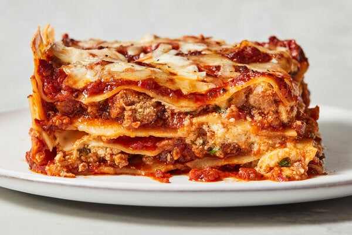

Worlds Best Lasagna Recipe

A recipe all of your friends will be talking about!
This lasagna recipe takes a little work, but it is so satisfying and filling that it's worth it!
Ingedients:
- 1 pound sweet italian sausage
- 3/4 pound lean ground beef
- 1/2 cup minced onion
- 2 cloves garlic, crushed
- 1 (28 ounce) can crushed tomatoes
- 2 (6.5 ounce) cans canned tomato paste
- 1/2 cup water
- 2 tablespoons white sugar
- 4 tablespoons chopped fresh parsley, divided
- 1 1/2 teaspoons dried basil leaves
- 1 1/2 teaspoons salt, divided, or to taste
- 1 teaspoon itialian seasoning
- 1/2 teaspoon fennel seeds
- 1/4 teaspoon ground black pepper
- 12 lasagna noodles
- 16 ounces ricotta cheese
- 1 egg
- 3/4 pound mozzarella cheese
- 3/4 cup grated parmesan cheese
Steps:
- Gather all your ingredients
- Cook sausage, ground beef, onion, and garlic in Dutch oven over medium heat until well browned
- Stir in crushed tomato, tomato sauce, tomato paste,
and water. Season with sugar, 2 tablespoons parsley,
basil, 1 teaspoon salt, italian seasoning, fennel seeds,
and pepper. Simmer, covered, for about 1 1/2 hours, stirring
- Bring large por of lightly salted water to a boil.
Cook lasagna noodles in boiling water for 8 to 10
minutes. Drain noodles, and rinse with cold water
- In a mixing bown, combine ricotta cheese with egg,
remaining 2 tablespoons parsley, and 1/2 teaspoon salt.
- Preheat oven to 375 degrees F (190 degrees C)
- To assemble, spread 1 1/2 cups of meat sauce in
the bottom of a 9x13-inch baking dish. Arrage 6 noodles
lenthwise over meat sauce. Spead with 1/2 of the ricotta
cheese mixture. Top with 1/3 of the mozzarella cheese
slices. Spoon 1 1/2 cups meat sauce over mozzarella and
sprinkle with 1/4 cup Parmesan cheese.
- Repeat layers, and top with remaining mozzarella and
Parmesan cheese. Cover with foil: to prevent sticking,
either spray foil with cooking spray or make sure the
foil does not touch the cheese.
- Bake in the preheated oven for 25 minutes. Remove
the foil and bake for an additional 25 minutes.
- Rest lasagna for 15 minutes before serving
Return Home